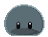

Game Inventory UI
Meet Slimy 
{kind=link}
Assignment
Create an inventory UI. The game developer had run into a block with this part of the project. She had a rough idea of what she thought she wanted. However, she didn’t like what she had pulled together. I had previously worked with her on small projects and offered to help.
Her initial design used three columns. Column one was Character Development, the second Inventory, and the third Crafting. However, stats and crafting were still in development and the inventory spaces needed to be able to start at ten.
Process
{kind=link}
Initial Approach
Using Figma, I recreated the initial layout. Once I was sure I had the existing elements properly sized, I began rearranging them. We hadn’t discussed colors in detail, so I left them random.
The Character image was kept in the top left with the three Cores above it and the stats below. My focus was on the inventory itself. I moved the item description to the top of the center column where the inventory is shown. The stats and description would be closer to the crafting icons. This will help prevent crafting with the wrong item. The stats of the item appear in a dual column format with the description immediately below the description.
In game, the slime will hold inventory in their stomach. In light of that, I created the inventory in the shape of the slime. The initial ten items were a block and indicated with a darker green color. When more inventory becomes available, the additional spaces can become visible.
The crafting system is in development. Currently, an item can be created or deconstructed. Two options were in the original and I kept that in my version. I added a location for text describing what will happen with the crafting as well as a potential space for a crafting animation.
{kind=link}
Feedback on Initial Approach
The developer liked the idea but shared that the inventory had to be square or rectangle and that all squares had to be visible from the start. Additionally, the slime crafts but also digests items to create slime, aka mana.
{kind=link}
Next Steps
With a clearer understanding of the limitations of the game engine and coding requirements, I edited the layout. Once that was approved, we discussed colors. I integrated colors from the game’s palette, which she had shared with me.
{kind=link}
I wanted more visual interest on the screen. Using draft assets of the game, I created outlines of the slime in Photoshop. I used these in various locations onscreen. During this process, I learned that pumpkins play an important role in the life of the slime. With that in mind, I found a pumpkin image from Pixabay and created an outline. Unsure which option the designer would prefer, I shared an image with both visible.
{kind=link}
Feedback on Next Steps
The developer loved the idea of the outlines but shared that the inventory spaces needed to have 32x32 pixels visible and all the same color. She also specified that Cores should be square. I shared some of my personal observations and made suggestions for more changes, such as moving the three Cores below the Slime image.
{kind=link}
Last Steps
The requested and suggested edits were made. A green 32x32 pixel box was shown to confirm the spacing for the inventory elements. After reviewing those changes, we had a conversation regarding the crafting to help her work out the system details. This resulted in some additional blocks in the Character Development column and a complete rework of the Crafting column. She relayed that she wanted rounded corners for the screen to coincide with the rounded nature of the slime.
{kind=link}
Solution
{kind=link}
“It’s fantastic!” The developer requested an image with the white and purple removed and with a one-pixel border added to all gray images. The image was sent to the developer and was added to that iteration of the game.
Reflection
The project was fun and rewarding. The process could have been shortened. Once the basic layout was approved, requesting the developer’s color preferences would have resulted in fewer changes. My initial hesitancy to suggest major layout changes increased the development time. Once I understood the level of commitment the developer had to her design, I provided more dramatic suggestions. The risk paid off, and the developer was quite happy with the result.